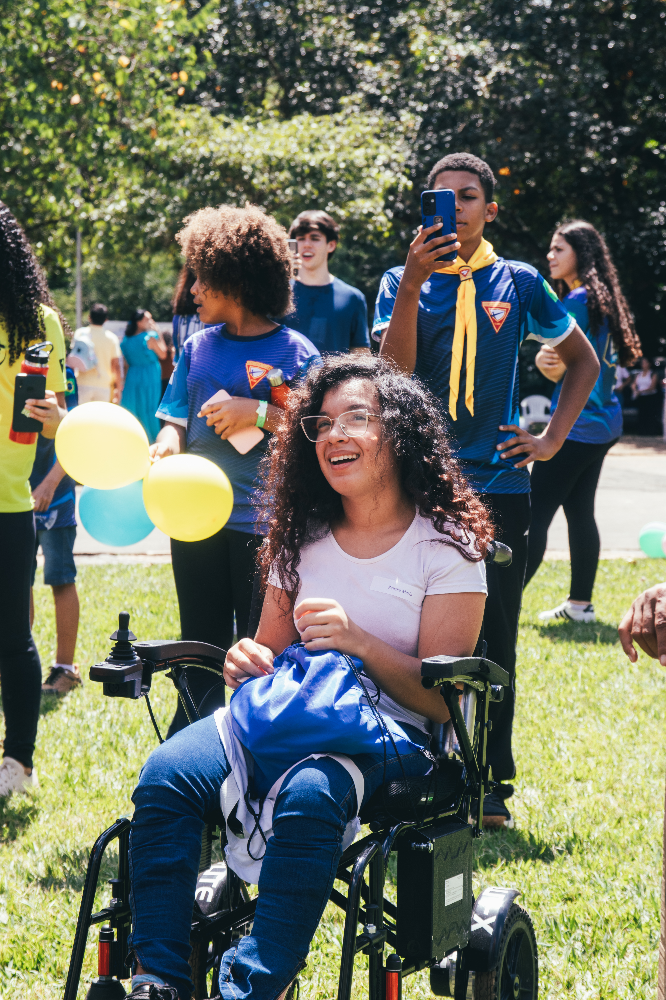

O aplicativo criado
para formar testemunhas
Informação, orientação e apoio em um só lugar.
Fazer download do aplicativo Disponível para Android e iOSInformação, orientação e apoio em um só lugar.
Fazer download do aplicativo Disponível para Android e iOSO Formando Testemunhas é um projeto desenvolvido para oferecer orientação clara e acessível aos usuários, utilizando tecnologia como ferramenta de apoio e aprendizado.
Confira alguns momentos e registros do projeto Formando Testemunhas.

Clique no botão abaixo para baixar o aplicativo na sua loja de aplicativos preferida.